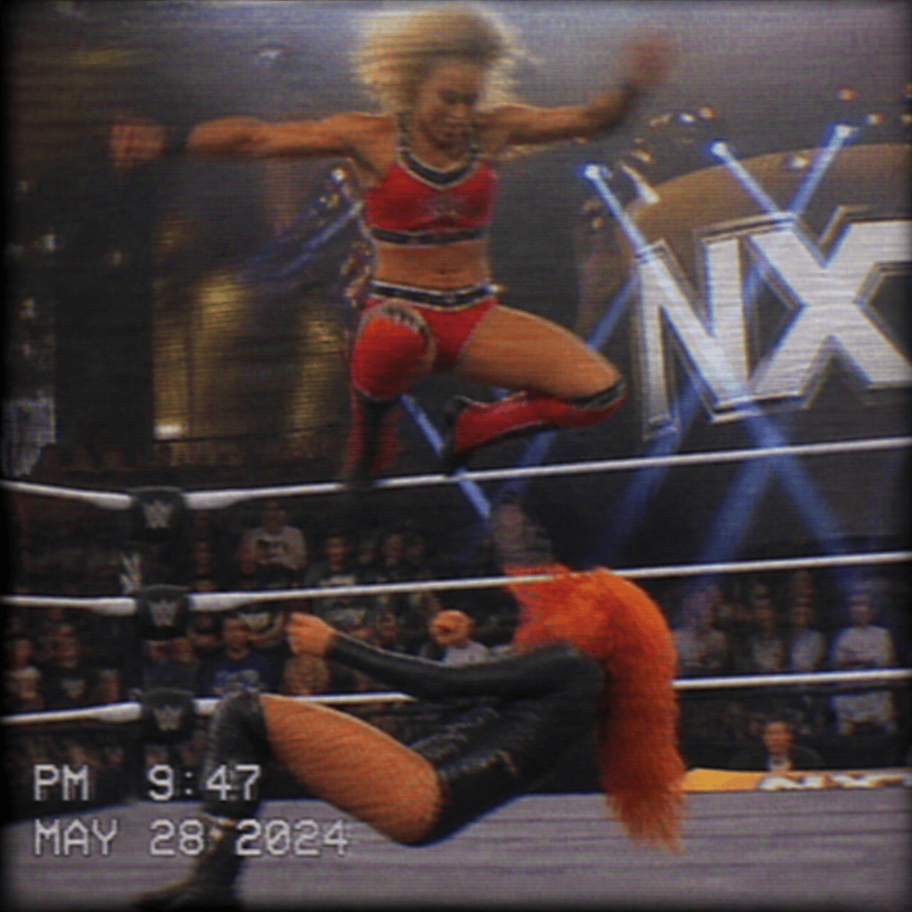

2026/11/11(水)
アベマ・試合結果速報！
○AJスタイルズ (14分23秒 スタイルズクラッシュ) 四代目タイガーマスク●
○ゾーイ・スターク (22分36秒 スノーボード・スラム) カイリ・セイン●
○永田裕志 (11分18秒 ドロップキック) ブ��ンソン・リード●
○ベイリー (18分42秒 バイオレット・ドライブ) パイパー・ニーヴェン●
○El Hijo del Vikingo (15分55秒 ドラゴン・スクリュー) 戸澤陽●
○ゾーイ・スターク (23分07秒 ベリー・トゥ・ベリー・スープレックス) ベッキー・リンチ●
○アルバ・ファイア (10分12秒 フィッシャーマン・スープレックス) アルバ・ファイア●
○スカーレット (19分40秒 スカーレット・ストーム) ジェイド・カーギル●
○永田裕志 (8分37秒 突進ラリアット) コフィ・キングストン●
○スカーレット (17分05秒 フェイス・ブリーカー) マキシン・デュプリ●
○カイリ・セイン (12分34秒 インディ・スレッジハンマー) ジェイド・カーギル●
Thank you for Watching !

「(ゾーイ・スターク vs ベッキー・リンチ の結果)」